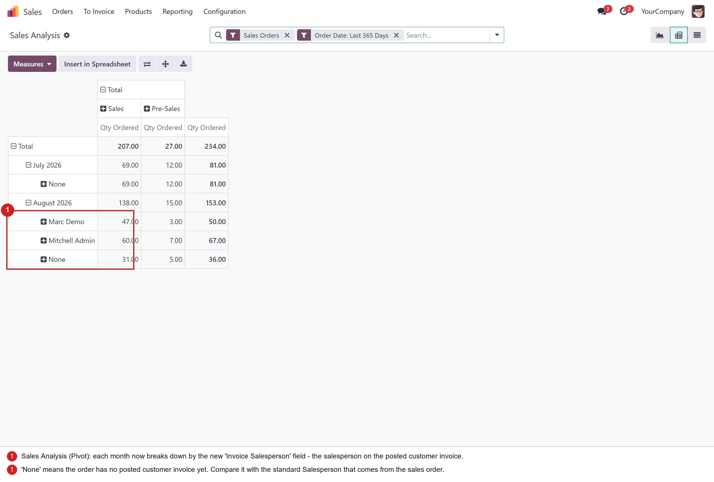
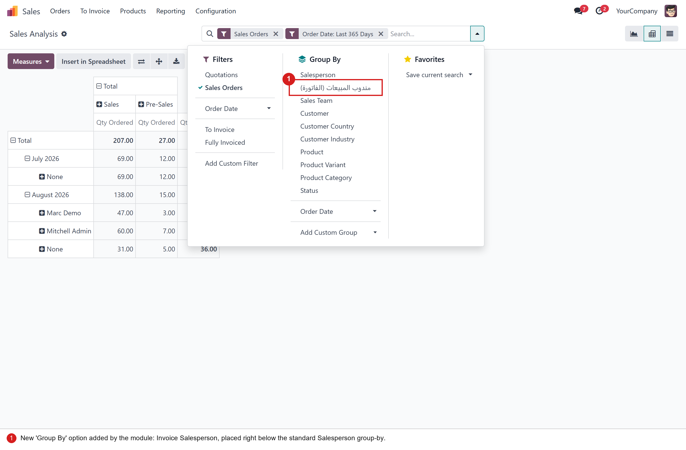
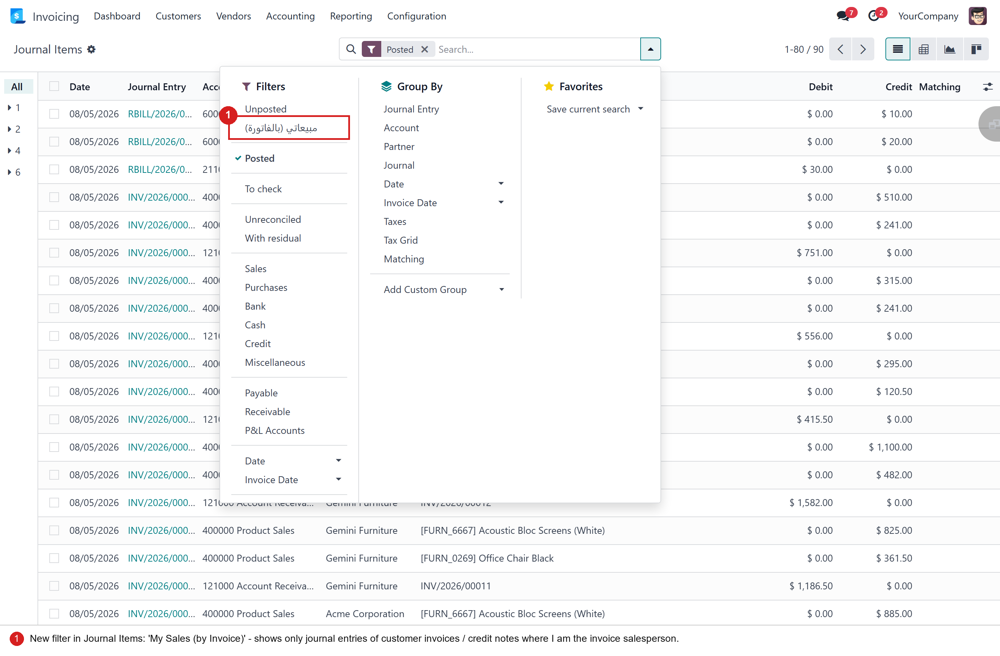
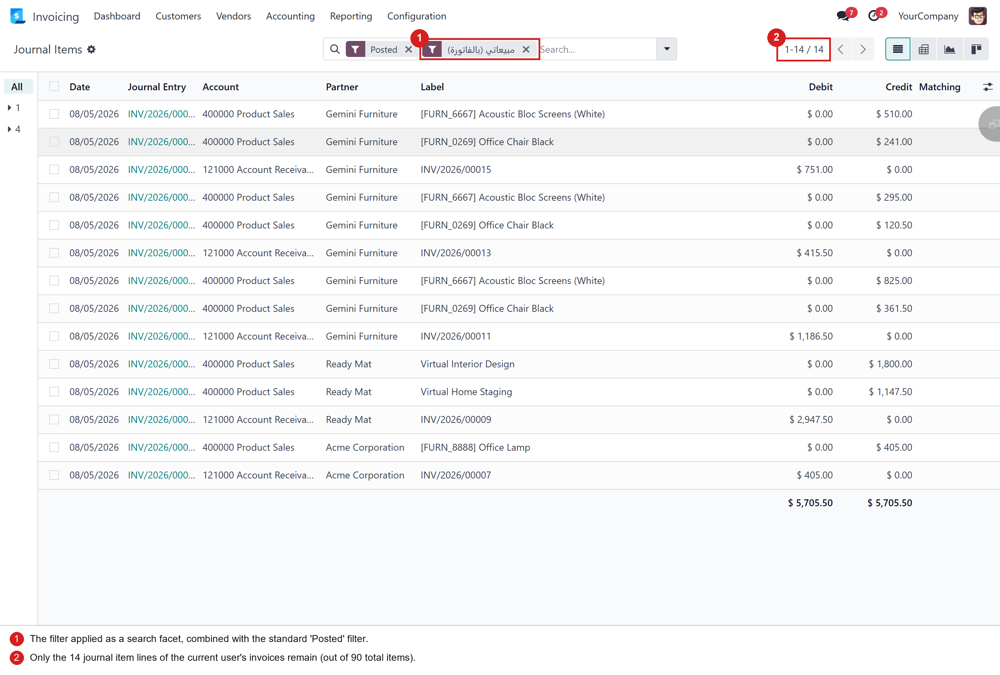

See who really sold it — track the salesperson on the invoice, not only on the sales order.
The standard Sales Analysis report always shows the salesperson taken from the
sales order (user_id). In many companies, however, the salesperson recorded on the
customer invoice (invoice_user_id) is a different person — invoices get reassigned,
commissions are paid on invoiced (not ordered) revenue, or the accounting team books the invoice
under another user. This module lets managers report and filter on the invoice salesperson
and compare both views side by side.
Open Sales → Reporting → Sales and switch to the pivot view. Every period now breaks down by the salesperson on the posted customer invoice. Orders that are not invoiced yet appear under None, so you can also spot uninvoiced revenue at a glance.

The same field is available in the search panel as a dedicated Group By option, right below the standard Salesperson — so you can compare “who took the order” vs “who invoiced it” in two clicks.

In Accounting → Journal Items the module adds a one-click filter that keeps only the journal
entries of customer invoices and credit notes where you are the invoice salesperson
(move_id.invoice_user_id = current user).

One click and the list shrinks to your own invoice lines — perfect for reviewing your receivables, checking commissions, or reconciling your customers.

invoice_user_id (Many2one → res.users) to the sale.report SQL model
via the standard _select_additional_fields() hook — no core model is modified.account.view_account_move_line_filter — zero performance impact.
Tested on Odoo 17, 18 and 19 (Community and Enterprise).
Depends only on the standard sale and account modules.